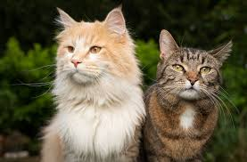

Cats are awesome for many reasons, combining their independent spirit with affectionate companionship. Their playful antics, from chasing laser pointers to pouncing on toys, provide endless entertainment. Cats are also known for their soothing presence; the sound of a purring cat can be incredibly calming and is even said to have therapeutic benefits. They are low-maintenance pets, requiring minimal grooming and are generally easy to care for. Additionally, cats are incredibly clean animals, spending a significant portion of their day grooming themselves. Their unique personalities, ranging from the aloof and mysterious to the cuddly and sociable, ensure that there is a perfect cat for every type of person.
